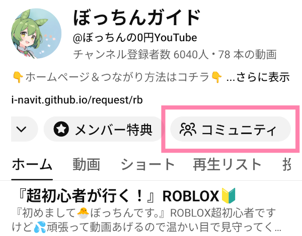
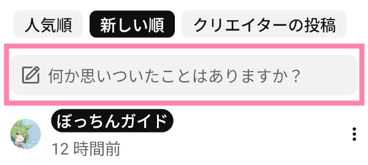
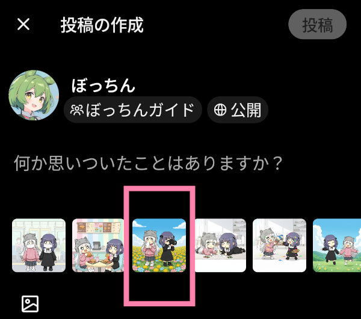
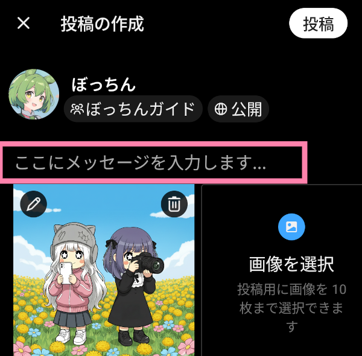
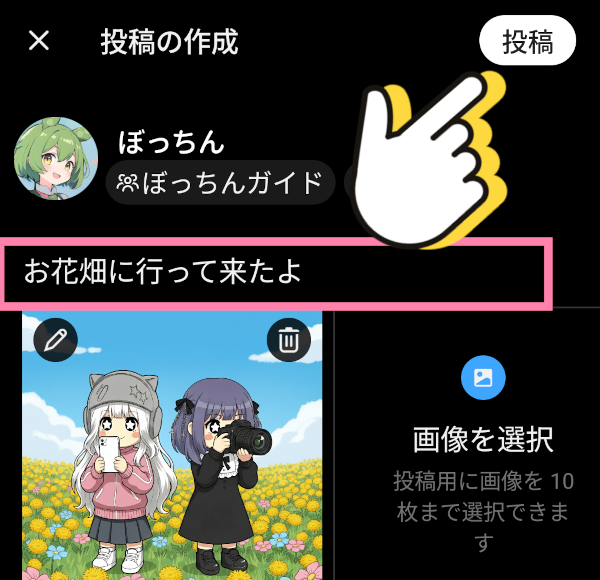
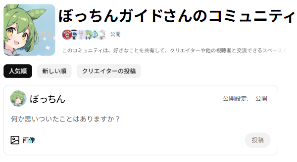

コミュニティ投稿のやり方
YouTube「ぼっちんガイド」のコミュニティに、みんなのイラストをかざっちゃおう！
「コミュニティ」は、みんながメッセージを送ったり、 自分でかいた絵を 見せ合ったりできる、 楽しい広場のような場所だよ。 キミが一生懸命かいたステキなイラストを、みんなに届ける やり方はこちら♪
（※パソコンやタブレットを使っているお友だちは、 一番下にあるやり方を見てね👀）
②おうちや、学校の場所がわかる 写真
③名札や学校の 名前が書いてある写真
「コミュニティ」は、みんながメッセージを送ったり、 自分でかいた絵を 見せ合ったりできる、 楽しい広場のような場所だよ。 キミが一生懸命かいたステキなイラストを、みんなに届ける やり方はこちら♪
（※パソコンやタブレットを使っているお友だちは、 一番下にあるやり方を見てね👀）
⚠️下の3つが分かる画像 は送らないでね
①キミの顔がうつっている写真②おうちや、学校の場所がわかる 写真
③名札や学校の 名前が書いてある写真
ステップ1
YouTube『ぼっちんガイド』の『コミュニティ』タブをタップ

ステップ2
「何か思いついたことはありますか？」をタップ

ステップ3
下の方にスマホの中にある
写真が出てくるよ。
送りたい画像を選んでタップ

ステップ4
「ここにメッセージを入力します…」をタップ

ステップ5
メッセージをかいて、【投稿】ボタンをおせばバッチリ！
これで完了だよ！

パソコンとタブレット
パソコンやタブレットを使っているお友だちは、
「コミュニティ」の一番上にあるこの場所から
投稿してね💻📱
